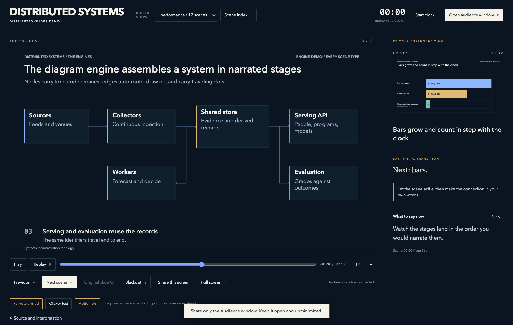
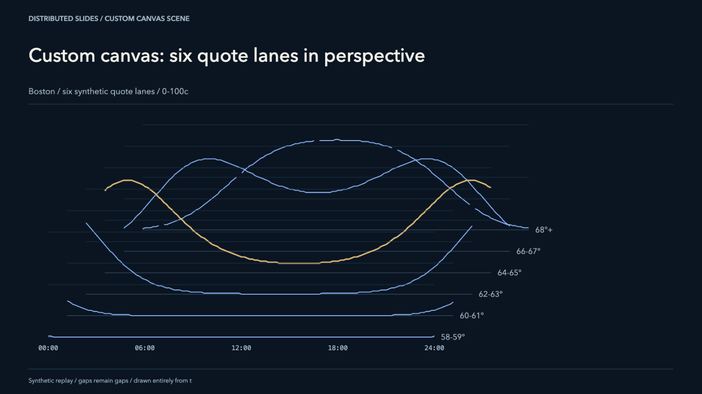

AN MCP SERVER / RUNS LOCAL / ZERO DEPENDENCIES
Slides that behave like instruments, not documents.
Distributed-Slides is an MCP server your agent uses to compile a talk into presentation software: deterministic clock-driven animation, a private presenter desk with speaking notes, and a synchronized audience window — built as one offline folder that runs forever.
Extracted from the presentation system built for the HEAT research performance, September 16, 2026.
This is not a video. The page loaded engine.js and mounted a scene. Drag the scrubber — every frame is a pure function of the clock.
// every scene engine returns this
mount(stage, scene, deck)
-> { update(seconds, motionEnabled), count }Nothing accumulates between frames. A scene at t = 8.2s is identical every time you visit it — from the scrubber, from a replay, from the audience window, or after a browser crash mid-talk.
- →Scrubbing is exact. Drag to any instant of any scene. The frame you land on is the frame the audience would have seen.
- →The audience window is a mirror, not a guess. State syncs over
postMessagewith a per-session token. Notes stay on your side of the glass. - →Reduced motion is the final frame. Motion off,
prefers-reduced-motion, or a preview thumbnail — all render the scene's resolved end state, by construction.


- Named runs of show — switch between the 25-minute cut and the full route, live
- Searchable scene index with live thumbnails
- Blackout, share-screen mode, deep links to any scene
- Learnable clicker mappings for any presenter remote
Register the server with your MCP client. Node 18+, no dependencies, nothing phones home.
create_deck, then add_scene — your agent reads scene_reference and writes scenes as JSON. Real datasets go in through set_data, not hardcoded into slides.
build_deck emits one offline folder. Open index.html, press P, and share only the audience window.
claude mcp add distributed-slides -- \
node /path/to/distributed-slides/src/server.mjs{
"mcpServers": {
"distributed-slides": {
"command": "node",
"args": ["/path/to/distributed-slides/src/server.mjs"]
}
}
}